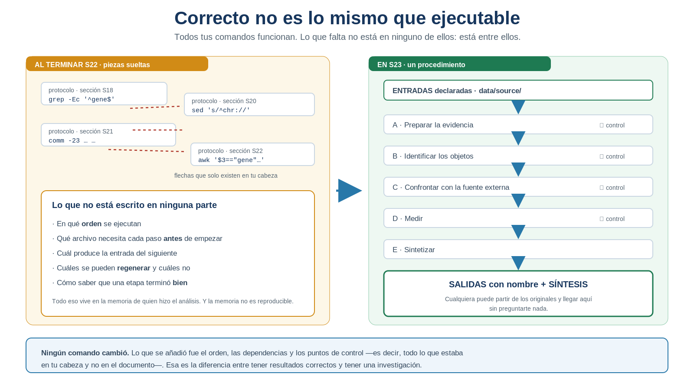
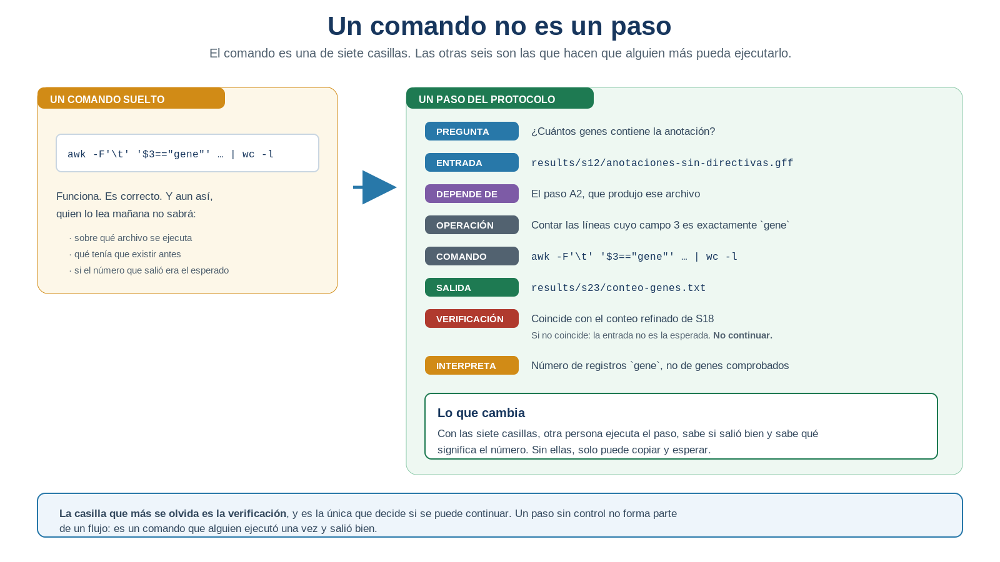
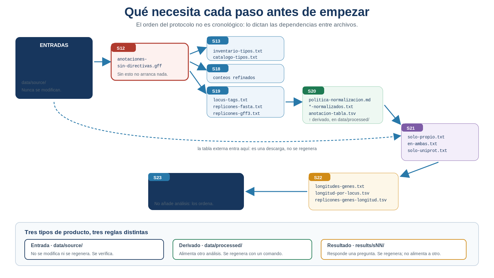

S23 — Integrar: el protocolo como cuaderno de laboratorio ejecutable
Antes de clase harás un primer intento sin ejecutar nada: dibujar el orden en que reconstruirías toda tu investigación partiendo solo de data/source/, y auditar qué piezas tienes realmente. Durante el taller ordenarás el flujo, integrarás los comandos ya validados y les añadirás sus puntos de control. Después ejecutarás el protocolo completo desde las fuentes y escribirás la síntesis final del genoma en doc/protocolo.md.
El primer intento es formativo: importa que descubras qué dependencias tenías solo en la cabeza.
Ficha del módulo
| Elemento | Descripción |
|---|---|
| Sesión | S23, 2 horas |
| Unidad | U4. Procesamiento y exploración de datos genómicos — sesión de cierre |
| Competencia principal | D. Análisis y exploración de datos genómicos |
| Competencias integradas | A. Documentación reproducible; B. Entorno Unix; C. Manejo de datos biológicos |
| Propósito | Convertir una investigación dispersa en un procedimiento ordenado, verificable y ejecutable de principio a fin, y sintetizar sus hallazgos |
| Consulta previa del Plan | S23 · awk (refuerzo) e integración; este módulo lo sustituye como lectura autocontenida |
| Continuidad | S18–S22 respondieron preguntas; S23 las ordena en un solo procedimiento |
| Lectura indispensable | Secciones 1–6 de este módulo (~45 min) |
| Lectura de consulta | Sección 7; los apartados S18–S22 de tu propio protocolo |
| Primer intento | Prácticas 1 y 2: auditoría del análisis acumulado y orden de ejecución, 40 min, sin comandos |
| Evidencia | Protocolo ejecutable de la Unidad 4, la tabla de genes ordenada y la síntesis final del genoma |
| Tarea numerada | Ninguna nueva. La evidencia integradora cierra la unidad |
Un protocolo ejecutable es un procedimiento que otra persona puede ejecutar manualmente, paso a paso, leyendo cada resultado y decidiendo entre etapas si conviene continuar. No es todavía un script, ni un archivo que se lance de una vez, ni un flujo que se detenga solo: eso llega en la Unidad 5. Aquí no hay herramientas nuevas ni métodos de análisis nuevos —todos los comandos los escribiste tú—; lo que se añade es lo que estaba entre ellos y no en el documento: el orden, las dependencias y los controles. Y un producto final integrador, la tabla de genes en su posición, que reúne en una sola representación lo que ya habías seleccionado, identificado y medido.
Relación con lo que ya sabes
S22 S23
Medir cuánto importa lo que encontré → Poder rehacerlo todo, en orden y sin ayuda
"tengo la respuesta y su comando" "otra persona parte de los originales y llega a mis conclusiones"Tu investigación está completa en contenido. Cada pregunta tiene su respuesta, su comando y su verificación. Y sin embargo, si alguien te pidiera hoy rehacerla entera sobre otro genoma, tendrías que ir sección por sección del protocolo reconstruyendo de memoria en qué orden va cada cosa.
| Habilidad que ya tienes | Dónde la aprendiste | Qué cambia en S23 |
|---|---|---|
| Documentar un comando con su resultado | Toda la unidad | Ahora cada comando declara además de qué depende y cómo se comprueba |
| Verificar un resultado | S13–S22 | Las verificaciones dejan de ser un acto final y pasan a ser puntos de control del flujo |
Distinguir data/source/, data/processed/ y results/ |
S20 | La distinción decide qué se regenera y qué no |
Ordenar con sort -k |
S13 | Vuelve para ordenar por posición genómica, con su trampa numérica |
| Conservar lo anterior sin borrarlo | S18 | El protocolo sigue siendo acumulativo: la sección de hoy no sustituye a ninguna |
Lo nuevo de hoy no es una operación: es que tu análisis deja de ser un conjunto de resultados correctos y pasa a ser un procedimiento.
Tu lugar en el ciclo de la evidencia
Las seis sesiones que cierran la unidad no enseñan seis herramientas: enseñan los seis pasos por los que una observación se convierte en evidencia científica. Hoy cierras el ciclo entero.
S18 SELECCIONAR la evidencia correcta ✔ resuelto
S19 IDENTIFICAR el objeto biológico correcto ✔ resuelto
S20 NORMALIZAR la evidencia para compararla ✔ resuelto
S21 CONFRONTAR con una fuente ajena ✔ resuelto
S22 CUANTIFICAR e interpretar ✔ resuelto
▶ S23 INTEGRAR el ciclo completo, reproducible ← estás aquíIntegrar es la sexta operación del ciclo, y es una operación intelectual como las demás: exige reconocer dependencias, decidir un orden y saber dónde comprobar. Lo que S23 no añade es un método nuevo de analizar el genoma: conecta y recorre de forma integrada las cinco operaciones anteriores, sobre los archivos originales.
Dónde estás en la investigación
| Pregunta de la investigación | En S23 |
|---|---|
| ¿Cuántos replicones tiene el genoma? | ✔ Se regenera hoy desde las fuentes |
| ¿De qué tamaño es? | ✔ Cerrada en S22; hoy se reproduce y se sintetiza |
| ¿Qué contiene la anotación y en qué proporciones? | ✔ Se regenera |
| ¿Cuántos genes y CDS hay? | ✔ Se regenera |
| ¿Cómo se distribuyen por cadena y qué longitud tienen? | ✔ Se regenera |
| ¿Qué parte concordó con una fuente externa y con qué magnitud difiere? | ✔ Se regenera |
| ¿Cómo se distribuyen espacialmente los genes en cada replicón? | ✔ Se resuelve hoy: el único producto nuevo |
| ¿Puede otra persona ejecutar toda la investigación? | ✔ Se resuelve hoy |
| ¿Qué decisiones, además de los archivos, hacen falta para rehacerla? | ✔ Se explicita hoy |
| ¿Puedo aplicar este análisis a otro genoma sin editarlo entero? | ☐ Unidad 5 |
Resultados de aprendizaje
Al finalizar la sesión podrás:
- Identificar las dependencias entre las etapas de tu análisis.
- Ordenar las operaciones de modo que cada entrada exista cuando se necesita.
- Distinguir entradas, derivados y resultados, y decidir cuáles se regeneran.
- Integrar comandos ya validados en un protocolo ejecutable, sin reescribirlos de memoria.
- Incorporar un punto de control después de cada paso crítico.
- Construir una tabla de genes ordenada por replicón, cadena y posición, con orden numérico correcto.
- Regenerar los resultados principales de la unidad partiendo solo de
data/source/. - Sintetizar los hallazgos del genoma con sus evidencias y sus limitaciones.
- Evaluar una propuesta de IA sobre el flujo mediante una prueba controlada.
- Explicar por qué un protocolo ejecutable todavía no es una herramienta automatizada.
Lista de verificación previa
Antes del taller comprueba que tienes:
Si has perdido algún archivo intermedio, no lo repongas todavía. Descubrir qué falta y comprobar que se puede regenerar es justamente el ejercicio de hoy. Lo único que no puede faltar es data/source/.
Ruta de S23
| Momento | Qué hacer | Tiempo estimado |
|---|---|---|
| Antes de clase | Leer las secciones 1–6. Auditar los productos canónicos y las decisiones, fijar los nombres y dibujar el mapa preliminar de dependencias (Prácticas 1 y 2) | 45 + 40 min |
| Taller (1.ª hora) | Integrar la ruta crítica del flujo y colocarle sus controles (Prácticas 3 y 4) | 60 min |
| Taller (2.ª hora) | Construir y verificar el producto espacial, y ejecutar los bloques esenciales (Prácticas 5 y 6) | 60 min |
| Después del taller | Ejecución completa, comparación con el respaldo, síntesis y cierre del protocolo (Práctica 7) | 120 min |
Las secciones 1–6 son indispensables; la sección 7 es de consulta y sostiene el puente a la Unidad 5.
En el taller se integra la ruta crítica —la secuencia mínima que va de las fuentes a los resultados principales— y se ejecutan los bloques esenciales. La integración exhaustiva, la depuración, la comparación de todos los productos y la redacción final se terminan después. El núcleo que no debe recortarse es:
dependencias → orden → controles → regeneración → síntesis1. Correcto no es lo mismo que ejecutable [Indispensable]
Abre tu protocolo y mira lo que tienes: decenas de comandos correctos, cada uno con su resultado y su verificación. Es un trabajo sólido. Ahora hazte una pregunta incómoda:
Si mañana te pidieran rehacer toda la investigación desde cero, ¿podrías?
Podrías, pero solo tú, y despacio. Tendrías que recordar en qué orden va cada cosa, qué archivo necesita cada comando, cuál produce la entrada del siguiente y cuáles ya no se pueden regenerar. Nada de eso está escrito en ningún sitio: está en tu memoria.

Figura 23.1. Correcto no es lo mismo que ejecutable. Lo que falta no está en ningún comando: está entre ellos. Elaboración propia.
IDEA CLAVE. Documentar una operación no equivale a integrar un análisis. Un protocolo que registra qué hiciste es un buen cuaderno; uno que además permite rehacerlo es un instrumento. La diferencia entre los dos es el orden, las dependencias y los controles.
2. Qué convierte un comando en un paso [Indispensable]
Un comando responde qué se ejecutó. Un paso del protocolo responde además sobre qué, después de qué, con qué resultado, cómo se comprueba y qué permite afirmar.

Figura 23.2. Un comando no es un paso. La casilla que más se olvida es la verificación, y es la única que decide si conviene seguir adelante. Elaboración propia.
Cada paso de tu protocolo ejecutable llevará estas siete casillas:
| Casilla | Qué contiene |
|---|---|
| Pregunta | Qué se quiere responder, en una frase |
| Entrada | El archivo o resultado previo que necesita |
| Depende de | Qué paso anterior tuvo que completarse |
| Operación | Qué transformación o cálculo se hace, en español |
| Comando | La instrucción exacta, ejecutable tal cual |
| Salida | El archivo que produce, con su nombre |
| Verificación | Cómo se comprueba, y qué significaría que fallara |
| Interpretación | Qué permite afirmar el resultado |
IDEA CLAVE. El comando ocupa una de las casillas. Las otras siete son las que permiten que otra persona lo ejecute sin preguntarte nada y sepa si salió bien.
3. El mapa de dependencias [Indispensable]
El orden de un protocolo no es cronológico —no es el orden en que aprendiste las cosas—, sino el que imponen las dependencias entre archivos: cada paso necesita que sus entradas existan.

Figura 23.3. Qué necesita cada paso antes de empezar. El cuello de botella es el cuerpo del GFF3 sin directivas: sin él no arranca casi nada. Elaboración propia.
3.1 Dos clases de entrada
Antes de leer el mapa conviene una precisión que suele pasarse por alto: data/source/ no basta para rehacer la investigación. Con los archivos originales y nada más, nadie podría reconstruir tus resultados, porque los comandos no se deducen de los datos.
| Entradas de datos | Entradas metodológicas |
|---|---|
| El FASTA y el GFF3, con su versión y su checksum | La definición de gen adoptada en S18 |
| La tabla externa de S21, con su ficha | El criterio sobre pseudogenes |
| — | La política de normalización de S20, ampliada en S21 |
| — | El universo comparable definido en S21 |
| — | Las fórmulas y unidades de S22 |
| — | El tratamiento de los valores faltantes |
| — | La convención de nombres y el orden del flujo |
Las primeras viven en data/source/; las segundas viven en doc/protocolo.md. La ejecución limpia parte de las dos:
datos fuente + decisiones metodológicas documentadasPor eso el protocolo no puede ser solo una lista de comandos: cada paso declara también qué decisión previa lo sostiene.
3.2 Lo que impone el mapa
De ese mapa salen dos consecuencias que gobiernan todo el protocolo.
No puedes empezar por donde quieras. La confrontación de S21 necesita listas normalizadas, que necesitan listas extraídas, que necesitan el cuerpo del GFF3 sin directivas. Si intentas ejecutar el comm de S21 sobre un proyecto recién clonado, falla —y falla mal: comm sobre archivos inexistentes no siempre avisa de forma clara—.
Y ese cuerpo del GFF3 no es un resultado: es un derivado. Alimenta a S13, S18 y S19, así que por la convención de S20 le corresponde vivir en data/processed/, no en results/. En el protocolo ejecutable se adopta su ruta canónica y se registra la histórica:
| Ruta canónica en el protocolo | Ruta histórica | Tipo |
|---|---|---|
data/processed/anotaciones-sin-directivas.gff3 |
results/s12/anotaciones-sin-directivas.gff |
Derivado reutilizable |
Se produce igual que siempre —el comando de S12 no cambia—, solo cambia dónde se escribe.
Hay una entrada que no se regenera. La tabla externa de S21 se descargó de un recurso que actualiza sus versiones. No es un derivado: es una entrada, como el FASTA y el GFF3, y en el protocolo se declara con su ficha y su checksum, no con un comando que la produzca.
Al auditar tu propio protocolo vas a encontrar que el mismo archivo tiene nombres distintos según la sesión: el material de S10–S13 usa los nombres con que RefSeq entrega los archivos (genome.fna, genomic.gff) y el de S18–S22 usa nombres propios (genoma.fna, anotacion.gff3). Adopta una convención para el protocolo ejecutable y publica la tabla de equivalencias: reescribir en silencio las secciones antiguas destruiría la historia del razonamiento, que es lo más valioso que tienes.
IDEA CLAVE. Las dependencias no se inventan: se leen. Cada comando declara sus entradas en las rutas que menciona, y ordenarlas es un trabajo de lectura, no de memoria.
Práctica 1 — Inventariar lo que ya existe (antes de clase, primer intento)
Pregunta metodológica. ¿Qué piezas de mi investigación existen realmente, y cuáles no forman todavía un flujo?
Objetivo. Auditar el material acumulado antes de intentar ordenarlo.
Antes de clase. En doc/s23-primer-intento.md, sin ejecutar comandos:
No transcribas el historial de la terminal. Solo entra en el mapa lo que alimenta el flujo: entradas originales, derivados reutilizables, productos que otro paso necesita, resultados finales, controles bloqueantes y decisiones manuales. Quedan fuera las inspecciones temporales, los comandos exploratorios, los archivos que descartaste y las pruebas que no alimentan nada. El objetivo es un mapa, no un diario.
Inventaría los productos canónicos, uno por fila:
Producto Tipo Sesión Entrada que necesita ¿Existe aún? ¿Se regenera? ¿Qué paso lo usa después? … entrada / derivado / resultado … … sí/no sí/no … Inventaría las decisiones metodológicas —definición de gen, criterio sobre pseudogenes, política de normalización, universo comparable, fórmulas y unidades, tratamiento de faltantes— y anota en qué sesión quedó fijada cada una.
Marca las inconsistencias: rutas que ya no existen, dos nombres para el mismo producto, comandos que solo imprimieron en pantalla sin guardar nada, verificaciones que hiciste pero no registraste, decisiones tomadas sin dejar rastro.
Señala lo irreproducible. ¿Algún resultado dependió de algo manual —una descarga, una inspección visual, una decisión no escrita—? Esos pasos no desaparecen: se declaran.
Decide los nombres canónicos y escribe la tabla de equivalencias con los históricos.
Criterio de logro: tu mapa distingue los tres tipos de producto y las decisiones metodológicas, e incluye al menos una inconsistencia real —todas las investigaciones las tienen— resuelta sin borrar historia.
Práctica 2 — El orden que impone la dependencia (antes de clase, primer intento)
Pregunta metodológica. ¿En qué secuencia deben ejecutarse las operaciones para que cada entrada exista cuando se la necesita?
Objetivo. Construir el esqueleto del protocolo antes de escribir ninguna línea.
Antes de clase. En el mismo documento:
- Escribe cada operación en una tarjeta —papel o una lista, da igual—: verificar las fuentes, preparar el cuerpo del GFF3, seleccionar los registros, extraer los identificadores, normalizar, construir universos comparables, confrontar, calcular longitudes, calcular densidades, ordenar por posición, sintetizar.
- Ordénalas de modo que ninguna necesite algo que aún no existe.
- Justifica tres dependencias concretas: para cada una, di qué pasaría si invirtieras el orden.
- Agrupa en cinco bloques y ponles nombre. Si tu agrupación se parece al ciclo de la evidencia, no es casualidad.
- Marca lo que no sabes. Señala los pasos de cuya posición no estés seguro: son los que más vas a aprender en el taller.
Criterio de logro: tu orden no tiene ningún paso cuya entrada se produzca después, y puedes explicar por qué el análisis no puede empezar por la confrontación.
4. Los puntos de control [Indispensable]
Un flujo no es correcto por haber llegado al final. Puede terminar sin errores y haber producido basura: una lista vacía, un archivo sin ordenar, un conteo que incluye el encabezado.
Por eso cada bloque termina con un control. No hay que inventarlos: ya los tienes todos, repartidos por las sesiones anteriores. Lo único que hace S23 es colocarlos dentro del flujo, decir qué resultado exacto se espera y qué debe hacer la persona si no se cumple.
Los controles son de dos clases:
- Informativo: conviene anotarlo, pero su resultado no invalida lo que viene.
- Bloqueante manual: si no se cumple, la persona no debe continuar hasta corregirlo, porque todo lo posterior heredaría el error.
| Paso | Salida esperada | Control con su expectativa exacta | Tipo | Qué hacer si falla | De dónde viene |
|---|---|---|---|---|---|
| 1 | Cuerpo del GFF3 sin directivas | Líneas que empiezan por #: cero |
Bloqueante | Revisar el filtro o la entrada; no continuar | S12 |
| 2 | Lista de identificadores | Sin encabezado; líneas vacías: cero; identificadores extraídos = genes − genes sin locus_tag |
Bloqueante | Revisar la extracción; no continuar | S19 |
| 3 | Lista normalizada | Misma cardinalidad que la original, o diferencia explicada por colisiones documentadas | Bloqueante | Revisar la política; no continuar | S20 |
| 4 | Zonas de la confrontación | sort -c no falla en ninguna de las dos listas |
Bloqueante | Ordenar antes de comparar | S20, S21 |
| 5 | Longitudes | Longitudes ≤ 0: cero; N = conteo de genes de S18 | Bloqueante | Revisar coordenadas y el +1 |
S22 |
| 6 | Resumen por replicón | Suma de genes por replicón = total de genes | Informativo | Anotar la diferencia e investigarla | S22 |
| 7 | Tabla ordenada | Casos con posición decreciente dentro de un grupo: cero | Bloqueante | Reordenar con clave numérica | S13, S23 |
Aquí nada se detiene solo. El protocolo declara cuándo hay que detenerse y qué corregir antes de seguir; quien lee el resultado y toma la decisión eres tú. Que la detención sea automática es justamente lo que falta, y es una de las razones de la Unidad 5.
IDEA CLAVE. La diferencia entre un flujo y una secuencia de comandos es que el flujo declara dónde hay que pararse y qué se espera exactamente en cada punto. Un control que dice «más o menos el número de genes» no sirve: no permite decidir.
Práctica 3 — Construir el protocolo ejecutable mínimo (durante el taller)
Pregunta metodológica. ¿Cuál es la secuencia mínima que reproduce las principales respuestas sobre mi genoma?
Objetivo. Integrar los comandos validados en un orden con dependencias explícitas.
Parte A — Recuperar, no reescribir
- Copia cada comando desde su sección del protocolo. No los escribas de memoria: los de memoria son los que traen errores. Si un comando no está registrado con exactitud, esa es una inconsistencia de la Práctica 1 y hay que resolverla ahora.
- Aplica los nombres canónicos que decidiste, y añade la tabla de equivalencias al principio de la sección.
Parte B — Ordenar en bloques
- Agrupa en los cinco bloques: preparar la evidencia · identificar los objetos · confrontar · medir · sintetizar.
- Escribe la cabecera de cada paso con sus casillas: pregunta, entrada, depende de, operación, comando, salida.
- Comprueba la cadena de entradas. Recorre el protocolo de arriba abajo y marca, para cada entrada, en qué paso anterior se produjo. Si alguna no aparece antes, el orden está mal —o es una entrada de
data/source/, y hay que declararla como tal—.
Producto esperado. El esqueleto del protocolo ejecutable con sus cinco bloques y sus pasos encadenados.
Criterio de logro: ninguna entrada aparece antes de haberse producido, y las entradas que no se producen están declaradas como originales.
Práctica 4 — Poner los controles donde importan (durante el taller)
Pregunta metodológica. ¿Cómo sé que cada etapa terminó bien antes de continuar?
Objetivo. Convertir tus verificaciones sueltas en puntos de control del flujo.
Pasos.
- Recupera las verificaciones que ya hiciste en S18–S22 y colócalas al final del paso que comprueban.
- Completa las dos casillas que faltan en cada una: qué resultado se espera y qué significaría una falla.
- Decide cuáles detienen la ejecución. No todos: un control que solo informa se anota; uno que invalida lo que viene, detiene. Marca los segundos.
- Busca los pasos sin control. Si algún paso no tiene ninguno, o bien es trivial —dilo— o bien te falta una verificación que nunca hiciste.
- Añade el control más olvidado de todos: comprobar que el archivo de entrada existe y no está vacío antes de usarlo.
Producto esperado. La tabla de puntos de control del protocolo, con su significado en caso de falla.
Criterio de logro: cada bloque termina con al menos un control, y los que invalidan el resto del flujo están marcados como bloqueantes.
5. El producto integrador: los genes en su lugar [Indispensable]
Hasta ahora has contado, medido y comparado genes, pero siempre como un conjunto sin geografía. Queda una pregunta que tienes todos los datos para responder y que nunca has planteado:
¿Cómo se distribuyen espacialmente los genes de cada replicón y de cada cadena?
La tabla que la responde no introduce ningún método ni herramienta nueva: reúne en una sola representación lo que ya seleccionaste (S18), identificaste (S19) y mediste (S22), colocándolo en su posición. Por eso es el producto integrador de la sesión —y no su eje: el eje sigue siendo convertir la investigación en un procedimiento ejecutable—.
5.1 Antes de ordenar: auditar la columna de la cadena
No supongas que la columna 7 solo contiene + y −. El formato GFF3 admite también . cuando la cadena no aplica y ? cuando es desconocida, y tu archivo puede traer otros valores. Averígualo con la distribución de frecuencias de S13:
grep -Ev '^#' data/processed/anotaciones-sin-directivas.gff3 \
| awk -F'\t' '$3=="gene" { print $7 }' | sort | uniq -cCada valor que aparezca se documenta y se conserva. No se eliminan los valores desconocidos: un gen cuya cadena no está determinada sigue siendo un gen, y hacerlo desaparecer de la tabla sería falsear el inventario.
5.2 Construir la tabla
Se parte del derivado canónico, no del GFF3 original: así el paso reutiliza el trabajo del bloque anterior y el mapa de dependencias queda reforzado. La extracción del identificador es la estrategia validada en S19 —patrón acotado con [^;]+—, y sort ordena por tres claves.
Primero, los dos conteos que sostienen el control de este paso:
grep -Ev '^#' data/processed/anotaciones-sin-directivas.gff3 \
| awk -F'\t' '$3=="gene"' | wc -l # genes seleccionados
grep -Ev '^#' data/processed/anotaciones-sin-directivas.gff3 \
| awk -F'\t' '$3=="gene" { print $9 }' | grep -vc 'locus_tag=' # genes SIN locus_tagLos genes sin locus_tag no se descartan en silencio: se cuentan y se declaran como faltantes documentados, igual que en S19.
printf 'replicon\tcadena\tinicio\tfin\tlongitud\tlocus_tag\n' > results/s23/genes-ordenados.tsv
grep -Ev '^#' data/processed/anotaciones-sin-directivas.gff3 \
| awk -F'\t' '$3=="gene" && $9 ~ /locus_tag=/ {
print $1 "\t" $7 "\t" $4 "\t" $5 "\t" $5-$4+1 "\t" $9 }' \
| sed -E 's/\t[^\t]*locus_tag=([^;]+).*$/\t\1/' \
| sort -k1,1 -k2,2 -k3,3n \
>> results/s23/genes-ordenados.tsvEl sed de la penúltima línea sustituye todo lo que va desde el tabulador hasta el final por el tabulador y solo el valor del locus_tag, acotado con [^;]+. Sin ese acotamiento se colaría el resto de la columna de atributos y la tabla tendría más de seis columnas.
| Clave | Qué ordena | Tipo | Por qué |
|---|---|---|---|
-k1,1 |
Replicón | Texto | Agrupa cada molécula de DNA |
-k2,2 |
Cadena | Texto | Agrupa las líneas de un mismo valor de cadena dentro del replicón |
-k3,3n |
Posición inicial | Numérico | Sin la n, el orden sería alfabético |
-k2,2 y qué no
Agrupa las líneas que comparten valor de cadena, pero el orden entre los grupos depende de cómo tu entorno compare esos caracteres: no des por hecho que + saldrá siempre antes que −. Lo que sí está garantizado, y es lo que importa, es la jerarquía replicón → cadena → posición creciente. Imponer un orden concreto a las cadenas exigiría una clave auxiliar que no hace falta aquí.
Sin n, sort compara las posiciones como texto y coloca 1000 antes que 190, igual que “casa” va antes que “perro”. Es exactamente la trampa de S13 con sort -nr, ahora sobre coordenadas: el archivo parece ordenado y no lo está.
5.3 Los controles de este paso
El primero es de cardinalidad, y sus cantidades tienen que cuadrar exactamente:
| Cantidad | Valor | Relación esperada |
|---|---|---|
| Genes seleccionados | … | Línea base; coincide con el conteo de S18 |
Genes sin locus_tag |
… | Se conservan como faltantes documentados |
| Filas con identificador | … | genes seleccionados − genes sin locus_tag |
| Identificadores únicos | … | Filas − duplicados, y cada duplicado explicado |
Si hay identificadores repetidos, se cuentan y se explican aparte: un mismo locus_tag en dos registros gene distintos es un hallazgo sobre la anotación, no un estorbo.
El segundo comprueba que dentro de cada grupo las posiciones nunca retroceden:
grep -v '^replicon' results/s23/genes-ordenados.tsv | cut -f1,2,3 \
| awk -F'\t' '{ if ($1==r && $2==c && $3 < p) mal++; r=$1; c=$2; p=$3 }
END { print (mal+0 == 0 ? "orden correcto" : "FALLA en " mal " casos") }'Y el tercero, que cada fila tenga exactamente seis columnas:
awk -F'\t' 'NF != 6' results/s23/genes-ordenados.tsv | wc -l # debe ser 0IDEA CLAVE. Ordenar por posición no es un ejercicio de
sort: es devolverle al genoma su geografía. Hasta hoy tus genes eran una lista; a partir de esta tabla son objetos situados en un replicón, con vecinos y con contexto —y con ella podrás formular preguntas que hasta ahora ni siquiera podías plantear—.
Práctica 5 — Construir y verificar el producto integrador (durante el taller)
Pregunta biológica. ¿Cómo se reparten los genes a lo largo de cada replicón y de cada cadena?
Objetivo. Reunir en una sola tabla lo seleccionado, identificado y medido, y comprobar que el orden es realmente el que crees.
Parte A — Auditar antes de construir
- Cuenta los valores de la columna de cadena y anótalos todos, incluidos
.,?o cualquier otro que aparezca. - Documenta qué significa cada uno según la especificación GFF3, y decide si lo conservas. Los valores desconocidos se conservan: un gen con cadena no determinada sigue siendo un gen.
- Cuenta los genes sin
locus_tag. Quedarán fuera de la tabla, así que hay que declararlos.
Parte B — Construir
- Genera la tabla desde el derivado canónico, con encabezado y seis columnas.
- Cuadra la cardinalidad con la tabla de relaciones de la Sección 5.3: filas con identificador = genes seleccionados − genes sin
locus_tag. - Ejecuta a propósito la versión sin
nen la tercera clave y localiza el punto exacto donde el orden se rompe.
Parte C — Verificar y leer
- Aplica los tres controles: posiciones no decrecientes, seis columnas por fila y cardinalidad.
- Contrasta con el archivo original: toma tres genes de la tabla y comprueba sus coordenadas en el GFF3.
- Observa dónde aparecen los genes con cadena
.o?, si los hay. - Mira las sucesiones. ¿Hay tramos largos de genes consecutivos en la misma cadena? Anótalos como observación, no como hallazgo: una sucesión así puede sugerir una organización local que merecería investigarse, y nada más.
Producto esperado. results/s23/genes-ordenados.tsv verificada, con la auditoría de cadenas y dos o tres observaciones formuladas como preguntas.
Criterio de logro: los tres controles pasan, ningún valor de cadena desapareció sin declararse, y tus observaciones espaciales están escritas como preguntas abiertas.
Permite inspeccionar la organización de los genes, revisar vecinos, observar sucesiones en la misma cadena y formular preguntas sobre el contexto de un gen. No permite demostrar operones, cotranscripción, islas genómicas ni unidades transcripcionales, ni afirmar que existen regiones sin anotación: eso último exigiría calcular las distancias entre genes consecutivos, que no has hecho. Para sostener cualquiera de esas afirmaciones harían falta evidencias adicionales —distancias intergénicas, promotores, terminadores, datos transcriptómicos, conservación entre especies o anotación funcional— que quedan fuera de esta unidad.
6. Ejecutar desde el principio [Indispensable]
Un protocolo solo está probado cuando alguien lo ejecuta sin usar nada que no esté declarado. Y la única forma de comprobarlo es apartar los archivos que se supone que se regeneran.
6.1 Qué se conserva y qué se aparta
Antes de mover nada, hay que decidir —y escribir— el papel de cada archivo. Se conservan las dos clases de entrada; se apartan los derivados y los resultados.
| Archivo | Tipo | ¿Se conserva? | ¿Se regenera? | Motivo |
|---|---|---|---|---|
| FASTA | Entrada de datos | Sí | No | Archivo original |
| GFF3 | Entrada de datos | Sí | No | Archivo original |
| Tabla externa de S21 | Entrada de datos | Sí | No | Descarga documentada con checksum |
doc/protocolo.md |
Entrada metodológica | Sí | No | Contiene las decisiones sin las cuales nada se reconstruye |
| Cuerpo del GFF3 sin directivas | Derivado | No | Sí | Se produce desde el GFF3 |
| Tabla procesada de S20 | Derivado | No | Sí | Se produce desde las fuentes |
| Listas originales y normalizadas | Derivado | No | Sí | Se regeneran |
| Zonas de S21 | Resultado | No | Sí | Se recalculan |
| Medidas de S22 | Resultado | No | Sí | Se recalculan |
Y una regla absoluta:
data/source/ NUNCA se toca, se mueve ni se modifica.El procedimiento es: respaldar, apartar lo regenerable —tanto data/processed/ como results/—, ejecutar el protocolo bloque a bloque desde las entradas, y comparar lo nuevo con lo viejo.
mkdir -p respaldo-antes-de-s23
cp -r data/processed results/s19 results/s20 results/s21 results/s22 respaldo-antes-de-s23/Copia primero, aparta después y no borres nada. Si apartas data/processed/ sin haber declarado que el cuerpo del GFF3 vive ahí, el flujo fallará en el primer paso —y ese fallo es exactamente lo que la prueba busca provocar—.
6.2 Qué significa «coincide» en cada caso
Al comparar lo regenerado con el respaldo, no todo se compara igual. comm no es una herramienta universal: solo sirve para conjuntos ordenados.
| Tipo de producto | Qué debe coincidir | Estrategia |
|---|---|---|
| Lista ordenada de identificadores | El mismo conjunto | comm -3, que debe salir vacío |
| Archivo determinista (tabla, derivado) | El contenido exacto, byte a byte | Checksum de ambos, como en U3 |
| Conteo | El mismo valor | Comparación numérica directa |
| Tabla con orden definido | Mismas filas y mismo orden | Checksum; si difiere, comparar wc -l y las primeras filas |
| Resumen estadístico | N, mínimo, máximo, media y suma | Los controles de S22 |
Conviene distinguir cinco cosas que suelen confundirse: igualdad byte a byte, igualdad de conjuntos —mismos elementos, quizá en otro orden—, igualdad de cardinalidad —mismo número—, igualdad de resultados resumidos y mismo orden. Para cada producto de tu protocolo hay que declarar cuál de las cinco se espera: no todas las diferencias significan lo mismo.
IDEA CLAVE. Un análisis no está probado porque funcionó cuando lo hiciste: está probado cuando vuelve a funcionar partiendo solo de lo que declaraste como entrada —datos y decisiones—. Casi siempre, la primera ejecución limpia revela una dependencia que nadie había escrito.
Práctica 6 — Probar la regeneración (durante el taller)
Pregunta metodológica. ¿Puede mi protocolo reconstruir los resultados partiendo solo de los datos y las decisiones que declaré?
Objetivo. Probar el flujo desde las entradas y decidir qué equivalencia se espera de cada producto.
Parte A — Preparar la prueba
- Completa la tabla de qué se conserva y qué se aparta, con el motivo de cada fila.
- Declara la equivalencia esperada de cada producto según la tabla de la Sección 6.2.
- Respalda copiando —nunca moviendo el original— y después aparta los derivados y resultados. Conserva
data/source/ydoc/.
Parte B — Ejecutar
- Ejecuta el bloque A y evalúa sus controles antes de seguir. Si un control bloqueante no se cumple, detente: has encontrado una dependencia no declarada, que es el hallazgo más valioso de la práctica.
- Continúa bloque a bloque, decidiendo en cada frontera si conviene avanzar.
Parte C — Comparar
Compara con el respaldo usando la estrategia que declaraste para cada producto, y registra el resultado:
Producto Equivalencia esperada Estrategia aplicada Resultado … conjunto / byte a byte / conteo / orden comm/ checksum / numéricacoincide / difiere Explica cada diferencia. La causa suele ser una de tres: el comando registrado no era el que ejecutaste, faltaba un paso intermedio, o había una decisión manual sin documentar. Las tres son hallazgos y las tres se corrigen en el protocolo.
Producto esperado. El registro de regeneración con su tabla de equivalencias y las diferencias explicadas.
Criterio de logro: cada producto se compara con la estrategia adecuada a su tipo, y toda diferencia tiene una causa identificada y corregida en el protocolo.
7. Ejecutable todavía no es automático [Consulta]
Al terminar tendrás un protocolo que otra persona puede seguir. Conviene ser preciso sobre qué es y qué no es:
| Protocolo ejecutable (lo de hoy) | Herramienta automatizada (Unidad 5) |
|---|---|
| Comandos en orden, que una persona copia y ejecuta uno a uno | Se ejecuta como una unidad, de una vez |
| Rutas escritas explícitamente en cada comando | Las rutas se declaran una sola vez |
| El protocolo declara dónde detenerse; la persona lee el control y decide | La detención ante un fallo está programada |
| Aplicarlo a otro genoma exige editar todos los comandos | Se le indican los datos y se reutiliza |
| Se lee como un documento científico, con explicaciones | Se lee como un programa |
Las dos cosas son valiosas y una no sustituye a la otra. Un protocolo legible es lo que se publica junto a un artículo; una herramienta automatizada es lo que se usa a diario. Y el orden importa: automatizar un flujo que no entiendes produce errores más rápido.
IDEA CLAVE. Hoy tu análisis está integrado conceptualmente, pero su ejecución —y cada decisión de continuar o detenerse— sigue dependiendo de una persona: tú. Esa es la limitación con la que se cierra la Unidad 4, y no es un defecto del trabajo: es el punto exacto donde tiene sentido dar el siguiente paso.
Práctica 7 — La síntesis del genoma (después del taller)
Pregunta biológica. Después de seleccionar, identificar, normalizar, confrontar y medir, ¿qué puedo afirmar sobre este genoma?
Objetivo. Cerrar la investigación con una síntesis trazable.
Pasos.
Construye la tabla de hallazgos, una fila por pregunta central de la unidad. Las tres columnas de comprobación no son intercambiables:
- Verificación técnica: demuestra que el cálculo se hizo bien.
- Contraste interno: otra estrategia sobre la misma procedencia.
- Evidencia externa: proviene de otra fuente o criterio, parcialmente independiente.
Hallazgo Resultado Verificación técnica Contraste interno Evidencia externa Limitación Replicones … Identificadores sin duplicados FASTA ↔︎ GFF3 ↔︎ directivas (S19) — Misma procedencia Tamaño del genoma … Suma verificada (S22) Medición (S12) frente a declaración (S13) — Solo una versión del ensamblado Tipos de registro … Frecuencias suman el total (S13) Refinado con patrones anclados (S18) — … Genes y CDS … Conteo por dos estrategias (S22) … Fuente externa (S21) Independencia parcial Distribución por cadena … +más−más indefinidos = totalS18 frente a S22 — … Longitudes … Mín ≤ media ≤ máx; N = genes … — La media oculta la distribución Densidad por replicón … Unidades y denominador comprobados … — Usa la longitud declarada Concordancia con fuente externa … Listas ordenadas y normalizadas … Sí (S21) Independencia parcial declarada Discrepancias … Loci medidos = loci de la lista … Sí (S21, medidas en S22) Varias siguen abiertas Marca lo confirmado por más de una estrategia interna. Es lo que puedes defender con solidez.
Marca lo que recibió evidencia externa. Es distinto de lo anterior y más fuerte: no presentes una concordancia interna como si fuera validación externa.
Escribe la síntesis en prosa, no en tabla: tres o cuatro párrafos que respondan qué sabemos de este genoma, con qué grado de confianza y qué sigue abierto.
Declara las limitaciones globales, no las de cada paso: qué tipo de preguntas no puede responder este análisis con estos datos.
Escribe las preguntas abiertas que la Unidad 4 deja planteadas y no puede resolver.
Producto esperado. doc/protocolo.md con la síntesis final, y la tabla de hallazgos completa.
Criterio de logro: cada afirmación de la síntesis puede rastrearse hasta un paso del protocolo, y la conclusión se presenta como provisional y trazable, no como definitiva.
8. Documentar: la sección del protocolo [Indispensable]
Agrega a doc/protocolo.md, después de la sección de S22. No sustituye a ninguna de las anteriores: el protocolo sigue siendo acumulativo, y la historia del razonamiento —incluidas las respuestas provisionales que luego corregiste— es parte de la evidencia.
## S23 — Protocolo ejecutable de la Unidad 4
### 1. Alcance
Qué preguntas responde este protocolo y cuáles quedan fuera.
### 2. Entradas de datos
| Archivo | Procedencia | Versión | Checksum | ¿Se regenera? |
| --- | --- | --- | --- | --- |
| `data/source/genoma.fna` | … | … | … | No |
| `data/source/anotacion.gff3` | … | … | … | No |
| `data/source/uniprot-proteoma.tsv` | … | … | … | No — descarga documentada (S21) |
### 3. Entradas metodológicas
| Decisión | Definida en | Propósito | Estado |
| --- | --- | --- | --- |
| Definición de gen | S18 | Qué registros cuentan como gen | validada |
| Criterio sobre pseudogenes | S18 | Qué queda dentro y fuera del conteo | validada |
| Política de normalización | S20, ampliada en S21 | Qué diferencias de forma se eliminan | validada |
| Universo comparable | S21 | Qué conjuntos pueden confrontarse | documentado |
| Fórmulas y unidades | S22 | Longitud, densidad y sus unidades | verificadas |
| Tratamiento de valores faltantes | S20, S23 | Qué se conserva y cómo se declara | documentado |
| Convención de nombres y orden del flujo | S23 | Rutas canónicas y dependencias | fijada |
### 4. Archivos canónicos y equivalencias
| Archivo canónico | Tipo | Deriva de | Alimenta | Ruta histórica |
| --- | --- | --- | --- | --- |
| `data/processed/anotaciones-sin-directivas.gff3` | Derivado | `data/source/anotacion.gff3` | S13, S18, S19, S23 | `results/s12/anotaciones-sin-directivas.gff` |
| `data/source/anotacion.gff3` | Entrada | — | Todo el flujo | `genomic.gff` en S10–S13 |
| `data/source/genoma.fna` | Entrada | — | S12, S19 | `genome.fna` en S10–S13 |
| … | … | … | … | … |
### 5. Estructura esperada del proyecto
`data/source/` · `data/processed/` · `results/sNN/` · `doc/` — con el papel de cada una.
### 6. Dependencias entre pasos
| Producto | Producido en | Depende de | Uso posterior | ¿Regenerable? |
| --- | --- | --- | --- | --- |
| … | … | … | … | … |
### 7. Secuencia manual ejecutable
**Bloque A — Preparar la evidencia**
| Casilla | Contenido |
| --- | --- |
| Pregunta | … |
| Entrada de datos | … |
| Entrada metodológica | … |
| Depende de | … |
| Operación | … |
| Comando | … |
| Salida | … |
| Verificación | Expectativa exacta: … |
| Tipo de control | informativo / bloqueante manual |
| Decisión si falla | … (qué corregir antes de continuar) |
| Interpretación | … |
*(un bloque de estos por paso; bloques B a E igual)*
### 8. Puntos de control
| Paso | Salida esperada | Control y expectativa exacta | Tipo | Qué hacer si falla |
| --- | --- | --- | --- | --- |
| … | … | … | informativo / bloqueante | … |
### 9. Archivos generados
| Archivo | Qué contiene | Paso que lo produce |
| --- | --- | --- |
| … | … | … |
### 10. Registro de regeneración
Fecha, qué se apartó, qué bloques se ejecutaron y con qué resultado:
| Producto | Equivalencia esperada | Estrategia aplicada | Resultado |
| --- | --- | --- | --- |
| … | conjunto / byte a byte / conteo / orden | `comm` / checksum / numérica | coincide / difiere y por qué |
### 11. Síntesis final del genoma
| Hallazgo | Resultado | Verificación técnica | Contraste interno | Evidencia externa | Limitación |
| --- | --- | --- | --- | --- | --- |
| … | … | … | … | … | … |
Y tres o cuatro párrafos en prosa: qué sabemos, con qué confianza, qué se confirmó por más de una
estrategia interna y qué recibió evidencia externa —que no es lo mismo—.
### 12. Limitaciones globales
- El análisis describe **la anotación** del genoma, no el genoma comprobado experimentalmente.
- La concordancia con una fuente externa es parcial y quedó declarada por dimensiones (S21).
- Las medidas dependen de la definición de gen adoptada desde S18.
- Todo el análisis parte de una única versión del ensamblado.
- La ejecución sigue dependiendo de una persona que lea los controles y decida.
### 13. Preguntas abiertas
Las que la Unidad 4 deja planteadas y no puede resolver con estos datos y estas herramientas.La sección 3 —la tabla de equivalencias— parece burocracia y es lo contrario: reconocer que un archivo cambió de nombre a mitad de la investigación sin borrar las secciones antiguas es lo que permite que alguien lea tu protocolo completo y lo entienda. Reescribir la historia sería más limpio y menos honesto.
Evidencia de la sesión
Entrega o conserva, según indique el docente:
doc/s23-primer-intento.mdcon el inventario de piezas y el orden propuesto (Prácticas 1 y 2);- la tabla de inconsistencias detectadas y la convención de nombres adoptada;
- el protocolo ejecutable con sus cinco bloques y sus pasos completos;
- la tabla de puntos de control, con los bloqueantes marcados;
results/s23/genes-ordenados.tsvcon su verificación de orden;- el registro de la ejecución limpia y sus diferencias explicadas;
- la tabla de hallazgos y la síntesis interpretativa;
doc/bitacora-ia.mdactualizada;- sección S23 de
doc/protocolo.md, con todas las anteriores intactas.
Errores frecuentes y estrategias de diagnóstico
| Error | Por qué ocurre | Estrategia de diagnóstico |
|---|---|---|
| Reescribir los comandos de memoria | Parece más rápido que buscarlos | Comparar el resultado con el registrado en su sesión: si difiere, el de memoria estaba mal |
| Ordenar el protocolo cronológicamente | Es el orden en que se aprendió | Recorrer las entradas: si alguna se produce después de usarse, el orden es el equivocado |
| Empezar el flujo por la confrontación | Es la parte más interesante | Necesita listas normalizadas, que necesitan listas extraídas, que necesitan el cuerpo del GFF3 |
| Tratar la tabla externa como un derivado | Está en data/source/ como los demás |
No hay comando que la produzca: es una descarga documentada, con checksum |
| Reescribir las secciones antiguas al unificar nombres | Queda más limpio | Se pierde la historia del razonamiento; usar una tabla de equivalencias |
| Colocar todas las verificaciones al final | Se agrupan por comodidad | Un control al final no puede detener nada: va junto al paso que comprueba |
Ordenar coordenadas sin n |
sort -k3,3 parece suficiente |
1000 aparece antes que 190; aplicar el control de posiciones no decrecientes |
| Borrar resultados para probar la regeneración | Se confunde apartar con eliminar | Copiar primero, mover después, y nunca tocar data/source/ |
| Dar por probado el flujo porque terminó | Terminar y funcionar no son lo mismo | Comparar lo regenerado con el respaldo, archivo por archivo |
| Presentar la síntesis como definitiva | Es la última sesión de la unidad | Toda afirmación lleva su evidencia y su limitación: la conclusión es provisional |
Confundir data/processed/ con results/ |
Ambos son «cosas que produje» | Un derivado alimenta otro análisis; un resultado responde una pregunta y ahí termina |
| Automatizar sobre la marcha | Se ve la repetición y se quiere resolver ya | Automatizar un flujo que aún no se ha probado a mano multiplica los errores |
Creer que basta con data/source/ para regenerar |
Los datos parecen suficientes | Sin la definición de gen ni la política de normalización, los comandos no se deducen: las decisiones también son entradas |
Usar comm para comparar cualquier producto |
Es la herramienta de comparación conocida | comm compara conjuntos ordenados; una tabla con orden definido se compara por checksum |
Descartar los genes sin locus_tag sin contarlos |
Estorban en la tabla | Se cuentan y se declaran: la relación es genes − faltantes = filas con identificador |
Eliminar los valores de cadena distintos de + y − |
Parecen errores del archivo | . y ? están en la especificación: se documentan y se conservan |
| Afirmar que hay regiones sin anotación | Se ven huecos en la tabla ordenada | Habría que calcular las distancias entre genes consecutivos, que no se hizo |
| Deducir operones de una sucesión de genes | El patrón es sugerente | Una sucesión sugiere organización local; demostrarla exige promotores, terminadores o datos de transcripción |
Rúbricas
| Criterio | Logrado | Parcialmente logrado | Aún no logrado |
|---|---|---|---|
| Inventario y dependencias | Mapea entradas, salidas y dependencias, y detecta inconsistencias reales | Lista los comandos sin sus dependencias | No audita lo acumulado |
| Orden de ejecución | Ninguna entrada aparece antes de producirse; justifica las dependencias | El orden funciona pero no lo explica | Ordena cronológicamente |
| Consistencia de rutas | Adopta nombres canónicos y publica la tabla de equivalencias | Unifica nombres sin documentar el cambio | Mezcla nombres o reescribe las secciones antiguas |
| Separación de carpetas | Distingue entradas, derivados y resultados, y dice cuáles se regeneran | Usa las carpetas sin justificar la distinción | Trata todo como resultados |
| Protocolo ejecutable | Cada paso tiene sus ocho casillas y se puede seguir sin preguntar nada | Tiene comandos ordenados pero sin verificación ni dependencias | Es un bloque continuo de comandos |
| Puntos de control | Cada bloque tiene control, con su significado en caso de falla y los bloqueantes marcados | Hay controles, sin decir qué significaría fallar | Los controles están al final o no están |
| Tabla ordenada | Orden correcto por tres claves, verificado, con lectura biológica | Ordena bien sin verificar ni interpretar | Orden lexicográfico no detectado |
| Regeneración | Ejecuta desde las fuentes y explica cada diferencia | Ejecuta parcialmente | No prueba la regeneración |
| Síntesis | Cada afirmación es trazable, con evidencia y limitación; conclusión provisional | Resume resultados sin trazarlos | Presenta números sin síntesis |
| Uso crítico de IA | Detecta al menos un error concreto en una propuesta y lo documenta | Compara sin probar | Acepta la propuesta sin verificar |
La rúbrica es formativa; la evidencia integradora de la unidad es el protocolo ejecutable completo.
Autoevaluación
Comprobación rápida — formativa, al final del taller
- ¿Cuál es la diferencia entre un comando documentado y un paso reproducible?
- ¿Qué información necesita una etapa antes de poder ejecutarse?
- ¿Por qué no puedo empezar el flujo por la confrontación de S21?
- ¿Qué distingue
data/processed/deresults/? ¿Y dedata/source/? - ¿Qué control te impediría continuar con una lista vacía, y quién toma esa decisión?
- ¿Por qué el orden numérico importa al ordenar coordenadas?
- ¿Qué archivos de tu proyecto pueden regenerarse y cuáles no? ¿Y qué entradas no son archivos?
- ¿Por qué la tabla externa de S21 no se regenera?
- ¿Qué parte de tu protocolo sigue dependiendo de que una persona lo ejecute?
- ¿Qué haría falta para aplicar todo este análisis a otro genoma?
Semáforo
- 🟢 Verde: ordeno las operaciones según sus dependencias, integro los comandos validados con sus controles, regenero los resultados desde las fuentes y sintetizo los hallazgos con sus evidencias y límites.
- 🟡 Amarillo: tengo el flujo ordenado pero sin controles, o no he probado la regeneración.
- 🔴 Rojo: reescribo comandos de memoria, ordeno cronológicamente, o presento la síntesis sin poder rastrear cada afirmación.
Si estás en amarillo o rojo, vuelve a las Prácticas 2 y 4: lo central de hoy no es tener los comandos, es saber en qué orden van y cómo comprobar cada uno.
Cierre con IA: clásico vs. asistido
Trabaja primero a mano. Hoy la IA no construye nada: revisa lo que tú construiste.
Entrégale tu orden de ejecución —solo la lista de pasos, sin los comandos— y pídele que señale dependencias que puedas haber omitido.
Pídele controles adicionales para dos pasos concretos, y evalúa si son comprobables con las herramientas del curso.
Reproduce con IA una pregunta ya resuelta —el conteo de genes por cadena, o la longitud media— y compárala con tu solución:
Aspecto Mi solución Propuesta de IA Pregunta que responde … … Entrada que usa … … Supuestos … … Resultado … … Verificación … … Errores detectados … … Búscale los fallos típicos: opciones que no existen, sintaxis de
grepmezclada con la deawk, coordenadas sin el+1, orden lexicográfico de números, conteo de líneas##, encabezados incluidos en los cálculos, rutas inventadas, columnas equivocadas, o comandos que escribirían endata/source/.Registra en
doc/bitacora-ia.md: objetivo, herramienta, prompt, respuesta resumida, error o supuesto detectado, prueba controlada y decisión final.
🤖 Prompt para ProfeUnix Bioinfo: > Tengo un análisis de un genoma bacteriano organizado en estos pasos: [pegar la lista de pasos, sin > comandos]. Revisa el orden y dime si alguna etapa necesita un archivo que todavía no se ha > producido. Propón además un control de verificación para cada uno de los tres primeros pasos, usando > solo grep, cut, sort, uniq, comm, wc y awk. No escribas el flujo completo ni uses > variables de shell.
Un asistente tiende a proponer directamente un script con variables y bucles, que es la solución de la unidad siguiente y no la de hoy. Si no puedes explicar cada línea de lo que te devuelve, no entra en tu protocolo.
Lo que realmente aprendiste hoy
| Antes | Ahora |
|---|---|
| Resolvía una pregunta y conservaba su comando | Puedo reconstruir toda la investigación en un orden verificable |
| Mis verificaciones cerraban un análisis | Mis verificaciones deciden si el flujo continúa |
| Sabía qué archivos tenía | Sé cuáles son entradas, cuáles derivados y cuáles se regeneran |
| Mi protocolo registraba lo que hice | Mi protocolo permite que otra persona lo rehaga |
| Tenía una investigación documentada por partes | Tengo una investigación integrada, regenerable y verificable |
Cierre de la Unidad 4 y puente hacia la siguiente
El ciclo está completo:
S18 Seleccionar → qué evidencia cuenta
S19 Identificar → de qué objeto habla
S20 Normalizar → bajo qué representación se compara
S21 Confrontar → qué queda en pie ante una fuente ajena
S22 Cuantificar → cuánto importa lo que encontré
S23 Integrar → puede rehacerse entero, y lo he demostradoVale la pena mirar hacia atrás desde aquí. Empezaste la unidad con dos archivos verificados y una pregunta ingenua —¿de qué tamaño es este genoma?— que respondiste contando bytes. Terminas con un inventario del genoma sostenido por evidencia de dos procedencias, con sus magnitudes medidas, sus discrepancias explicadas y un procedimiento que cualquiera puede ejecutar. Entre una cosa y otra no hay más herramientas de las que caben en una mano: grep, cut, sort, uniq, tr, sed, comm y un poco de awk. Lo que cambió no fue el arsenal, fue la manera de preguntar.
Y sin embargo, mira lo que acabas de hacer en la Práctica 6. Ejecutaste el protocolo copiando comando por comando, esperando cada salida, comprobando a mano y decidiendo si continuar. Funcionó. Ahora imagina lo mismo para los doce genomas del mini proyecto, o para uno nuevo que llegue el mes que viene:
copiar treinta comandos, otra vez
editar la ruta del genoma en cada uno de ellos
recordar en qué orden iban
detenerte a comprobar entre bloques
y repetirlo entero cada vez que cambie un archivoNada de eso es difícil. Es tedioso y propenso a error, que en ciencia es peor que difícil: un error de copiado no avisa. Y sobre todo, cada repetición es una oportunidad nueva de equivocarse en algo que ya habías resuelto bien.
El análisis ya está integrado conceptualmente, pero su ejecución todavía depende de una persona.
Ese es el punto exacto donde termina la Unidad 4 y empieza la siguiente, con preguntas como estas:
¿cómo evito escribir la misma ruta veinte veces?
¿cómo aplico este análisis a otro genoma sin editar todos los comandos?
¿cómo repito una operación sobre muchos archivos?
¿cómo hago que el flujo se detenga solo cuando falta algo?
¿cómo convierto mi protocolo en una herramienta que otros puedan usar?Guarda tu protocolo ejecutable tal como quedó hoy. En la unidad siguiente será el punto de partida: no vas a escribir un programa desde cero, vas a convertir en herramienta un procedimiento que ya sabes que funciona. Y esa es la única forma sensata de automatizar algo.
En una frase
- Documentar una operación no es integrar un análisis.
- El orden de un protocolo lo dictan las dependencias, no la cronología.
- Un flujo sin puntos de control no sabe cuándo detenerse.
Anexo A. Correspondencia resultado–actividad–evidencia–criterio
| Resultado | Actividad | Evidencia | Criterio | Momento | Nivel en U4 |
|---|---|---|---|---|---|
| RA1 Identificar dependencias | Sección 3, Práctica 1 | Inventario con dependencias | Detecta al menos una inconsistencia real | Antes | Aplicación autónoma |
| RA2 Ordenar las operaciones | Sección 3, Práctica 2 | Secuencia en cinco bloques | Ninguna entrada precede a su producción | Antes | Aplicación autónoma |
| RA3 Distinguir entradas, derivados y resultados | Sección 3, protocolo | Tabla de archivos | Declara qué se regenera y qué no | Antes/después | Comprensión demostrada |
| RA4 Integrar comandos validados | Sección 2, Práctica 3 | Protocolo ejecutable | Los comandos se recuperan, no se reescriben | Taller | Aplicación guiada |
| RA5 Incorporar verificaciones | Sección 4, Práctica 4 | Tabla de puntos de control | Cada control declara qué significaría fallar | Taller | Aplicación autónoma |
| RA6 Construir la tabla ordenada | Sección 5, Práctica 5 | genes-ordenados.tsv |
Orden numérico verificado | Taller | Aplicación guiada |
| RA7 Regenerar desde las fuentes | Sección 6, Práctica 6 | Registro de la ejecución limpia | Cada diferencia tiene causa identificada | Taller | Aplicación autónoma |
| RA8 Sintetizar los hallazgos | Práctica 7 | Tabla de hallazgos y síntesis | Cada afirmación es trazable y provisional | Después | Aplicación autónoma |
| RA9 Evaluar una propuesta de IA | Cierre con IA | bitacora-ia.md |
Detecta un error concreto mediante prueba | Después | Aplicación autónoma |
| RA10 Explicar el límite del protocolo | Sección 7, cierre | Respuesta razonada | Distingue ejecutable de automatizado | Después | Comprensión demostrada |
Anexo B. Alineación transversal
| Actividad | Reproducibilidad | Verificación | Validación | Robustez |
|---|---|---|---|---|
| Inventario de piezas | Cada producto con su comando de origen | Se comprueba qué archivos existen | Se contrasta el protocolo con el proyecto real | Se declaran los pasos irreproducibles |
| Orden por dependencias | La secuencia queda escrita | Cada entrada se localiza en un paso previo | El orden se prueba ejecutándolo | Se identifica el cuello de botella |
| Puntos de control | Los controles quedan en el protocolo | Cada uno declara su resultado esperado | Provienen de verificaciones ya validadas | Se marca cuáles detienen la ejecución |
| Tabla ordenada | Comando completo documentado | Control de posiciones no decrecientes | Coordenadas contrastadas con el GFF3 | Se demuestra el fallo del orden lexicográfico |
| Ejecución limpia | Se parte solo de data/source/ |
Comparación con el respaldo | Se regeneran los resultados de cinco sesiones | Revela dependencias no declaradas |
| Síntesis final | Cada afirmación remite a su paso | Se distingue lo confirmado por dos vías | Se separa lo validado externamente | Se declaran las limitaciones globales |
Glosario
| Español | Inglés | Definición breve |
|---|---|---|
| Protocolo ejecutable | Executable protocol | Secuencia ordenada y verificada de operaciones que reproduce un análisis completo |
| Dependencia | Dependency | Relación por la que un paso necesita el producto de otro |
| Punto de control | Checkpoint | Comprobación situada al final de un paso, que decide si se continúa |
| Control bloqueante | Blocking check | Aquel cuya falla invalida todo lo que viene después |
| Entrada | Input | Archivo original que no se modifica ni se regenera |
| Derivado | Derived data | Archivo producido que sirve de entrada a otro análisis |
| Resultado | Result | Salida que responde una pregunta y no alimenta a otro paso |
| Regenerar | Regenerate | Volver a producir un archivo ejecutando su comando desde las entradas |
| Ejecución limpia | Clean run | Ejecución que parte solo de lo declarado como entrada |
| Trazabilidad | Traceability | Poder seguir cada afirmación hasta el paso que la produjo |
| Síntesis interpretativa | Interpretive synthesis | Conclusión que integra hallazgos, evidencias y límites |
| Automatización | Automation | Convertir un procedimiento manual en una herramienta reutilizable |
Referencias
- Noble, W. S. (2009). A quick guide to organizing computational biology projects. PLoS Computational Biology, 5(7), e1000424. https://doi.org/10.1371/journal.pcbi.1000424
- Sandve, G. K., Nekrutenko, A., Taylor, J., & Hovig, E. (2013). Ten simple rules for reproducible computational research. PLoS Computational Biology, 9(10), e1003285. https://doi.org/10.1371/journal.pcbi.1003285
- Wilson, G., Bryan, J., Cranston, K., Kitzes, J., Nederbragt, L., & Teal, T. K. (2017). Good enough practices in scientific computing. PLoS Computational Biology, 13(6), e1005510. https://doi.org/10.1371/journal.pcbi.1005510
- Buffalo, V. (2015). Bioinformatics Data Skills. O’Reilly Media. — Cap. 7 y prácticas de organización de proyectos.
- Free Software Foundation. (2024). GNU Coreutils Manual —
sortcon claves múltiples y orden numérico. https://www.gnu.org/software/coreutils/manual/coreutils.html - Sequence Ontology. (2020). Generic Feature Format Version 3 (GFF3) specification. https://github.com/The-Sequence-Ontology/Specifications/blob/master/gff3.md
- Wilkinson, M. D., Dumontier, M., Aalbersberg, I. J., et al. (2016). The FAIR Guiding Principles for scientific data management and stewardship. Scientific Data, 3, 160018. https://doi.org/10.1038/sdata.2016.18
Distribución estimada de las dos horas
| Bloque | Tiempo | Contenido |
|---|---|---|
| Puesta en común del inventario y del orden | 15 min | Prácticas 1 y 2, resueltas antes de clase |
| Integrar los comandos en bloques | 25 min | Práctica 3 |
| Colocar los puntos de control | 20 min | Práctica 4 |
| Construir y verificar la tabla ordenada | 25 min | Práctica 5 |
| Ejecución limpia por bloques | 25 min | Práctica 6 |
| Cierre de la unidad y puente | 10 min | Semáforo y planteamiento de la síntesis |
Los tiempos son estimaciones. La redacción completa del protocolo empieza antes del taller —con las Prácticas 1 y 2— y termina después, con la Práctica 7. No es realista escribir, depurar, ejecutar y documentar todo el flujo en dos horas. El núcleo que no debe recortarse es:
ordenar por dependencias → integrar → controlar → ejecutar desde las fuentes